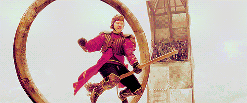
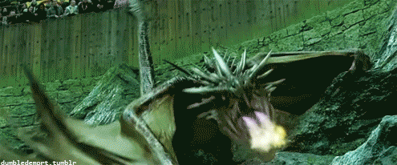
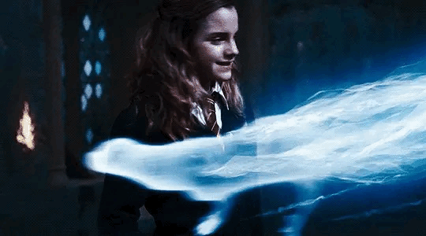

* THE WIZARD WORLD'S BEGUILING BROADSHEET OF CHOICE *
London
Data
Vol. I Nº I
EXCLUSIVE
The Faribolt
Made 1993
"This state-of-the-art racing broom sports a streamlined superfine handle of ash,
treated with a diamond-hard polish and hand-numbered with its own registration
number. Each individually selected birch twig in the broomtail has been honed to
aerodynamic perfection, giving the Firebolt unsurpassable balance and pinpoint
precision. The firebolt has an acceleration of 150 miles an hour in ten seconds
and incorporates an unbreakable Braking Charm. Price on request."
Ron would suffer much personal turmoil in his sixth year. Harry was named
Gryffindor team captain. Ron was
nervous about Quidditch try-outs, but beat out Cormac McLaggen in saves, partly because Hermione cast a
Confundus
Charm on McLaggen in retaliation for him insulting Ron and Ginny.

Felix Felicis into Ron's pumpkin juice at breakfast. Harry even allowed Hermione to see the vial, so she
would object to the cheating. This convinced Ron that he had an edge in the game, which caused him to play
excellently. However, when after the match Harry revealed it was a trick.
Harry Potter vs Hungarian Horntail
Around Hallowe'en, the students from Beauxbatons Academy of Magic and
Durmstrang Institute arrived at the school.
The arrival of famous international Quidditch Star Viktor Krum caused a lot of excitement, particularly among
girls. Viktor Krum, Fleur Delacour, and Cedric Diggory were all chosen to represent their respective schools
in this tournament. However, Harry was mysteriously chosen as a fourth competitor. This came as a shock for all
those present, due to the fact that he was under-age and that he never entered his name into the Goblet of Fire
during the selection process. Many people (even Ron and fellow Gryffindors) did not believe Harry's story. They
thought this to be nothing but another attempt to gain even more fame and eternal glory. This caused extreme tension
between the two friends and they did not speak again for a long time. Ron started spending more time with Dean
Thomas and Seamus Finnigan.

Hermione Granger
Before returning to Hogwarts, she and Ron learned that they had been appointed
prefects for Gryffindor house, to
the secret consternation of Harry, who couldn't believe Ron had been chosen over him. She took her position
very seriously. Once the school year began, Hermione resumed some of her activism on behalf of house-elves, though
she was not as intense about S.P.E.W. as she had been the previous year. She learned how to knit socks and hats
for the house-elves and hid them in Gryffindor Tower, disguising them with crumpled rubbish in an attempt to trick
the house-elves into accidentally freeing themselves.

The elves found this attempt insulting, and they stopped
cleaning the Tower at all. Dobby was the only one who enjoyed the gifts, took everything Hermione had made,
and cleaned the Tower by himself, a fact which Hermione didn't know. Hermione was challenged in more ways than one
that year when she met Luna Lovegood, whose belief in many things without logical grounds baffled Hermione.
However, the two became friends after accepting one another's differences.